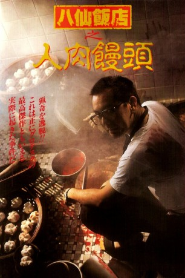

#10129 The Untold Story
 
 IMDB-Wertung: 7.0 / 10
IMDB-Wertung: 7.0 / 10  Metascore: 0
Metascore: 0 
Der geistig gestörte Wong Chi-hang tötet nach einer hitzigen Auseinandersetzung seinen Mahjongg-Gegenspieler, indem er ihn bewusstlos schläg und ihn dann bei lebendigem Leibe verbrennt.Zehn Jahre später: Wong Chi-hang ist Metzger und Besitzer eines Restaurants. Nachdem in Macao Leichenteile am Strand angeschwemmt werden, hat Wong recht schnell die Polizei im Nacken. Er verstrickt sich in Widersprüche und wird in Untersuchungshaft genommen. Nach einigen dezenten Folteraktionen seitens der Polizei legt Wong ein umfassendes Geständnis ab und das gesamte Ausmaß der Geschickte wird deutlich: Nachdem er vor zehn Jahren aus Hongkong geflüchtet war, hatte er den Besitzer des Restaurants und dessen gesamte Familie bestialisch umgebracht. Ihre Körper hatte er anschließend zur Herstellung kleiner Fleischbällchen verwendet.
Jahr: 1993
Dauer: 95 Minuten
FSK: 18
Land: Hong-Kong Studio: Albatros FilmTonspuren:
Untertitel: Deutsch,
Auflösung: 720p (1280x720) Größe: 4474 MB
Genre: Horror, Komödie, Krimi
Regisseur: Danny Lee, Herman Yau
Drehbuch: Wing-Kin Lau, Kam-Fai Law
Soundtrack:
Darsteller:
 Anthony Chau-Sang Wong als Wong Chi Hang
Anthony Chau-Sang Wong als Wong Chi Hang Danny Lee als Officer Lee
Danny Lee als Officer Lee- Emily Kwan als Bo
 Siu-Ming Lau als Cheng Lam
Siu-Ming Lau als Cheng Lam- Fui-On Shing als Cheng Poon
- Eric Kei als Robert
- King-Kong Lam als King Kong
- Parkman Wong als Bull
- James Jim-Si Ha als Wong's Mahjong Buddy
- Chor-Fai Kwong als Macau Policeman
- Siu-Hung Leung als Doctor
- Si Man Hui als Cheng Lam's Wife
- Wai-Nam So als Policeman
- Julie Lee als Pearl
- Tin-Dok Wong als Hair Dresser
- Dave Lam Jing als Policeman at Hospital
- Pak Fei als Customs Officer Chan
- Chun Hung Cheung als Inmate
- Yee-Chong Lee als
- Chi Long als
- Kwok-Kin Ng als
- Ga-Yee Poon als
- Lai-Si Tam als
- Atta Wong als
- Ching-Man Wong als
- Yiu-Fung Woo als
Datei: X:\FSK18-Eastern\Untold Story, The (1993, FSK18, 1280x720).mkv seit 08.12.2018
Festplatte: FSK18
 Es gibt insgesamt 102 Filme in der Gruppe 'FSK18-Eastern'
Es gibt insgesamt 102 Filme in der Gruppe 'FSK18-Eastern'